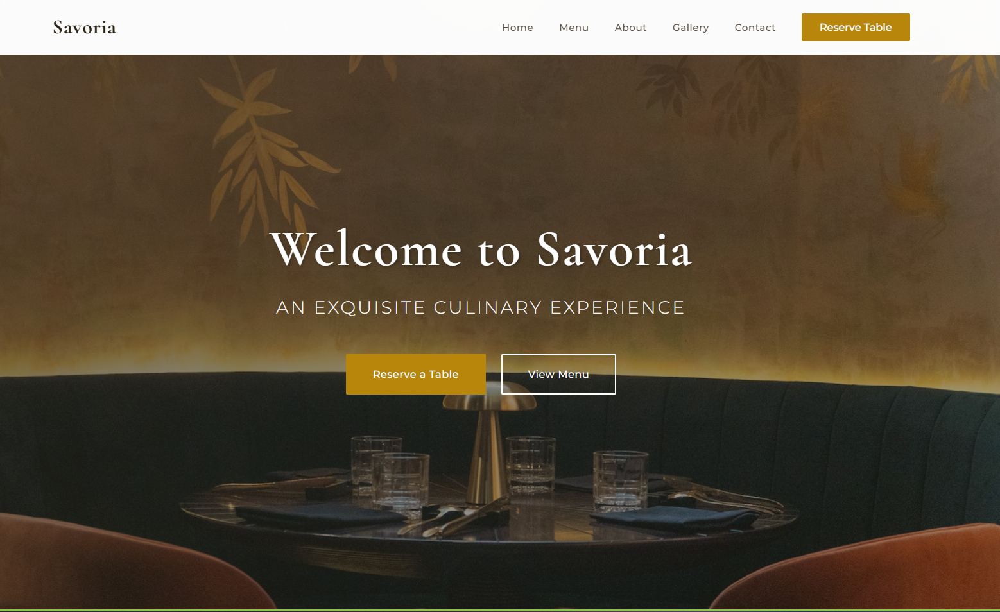
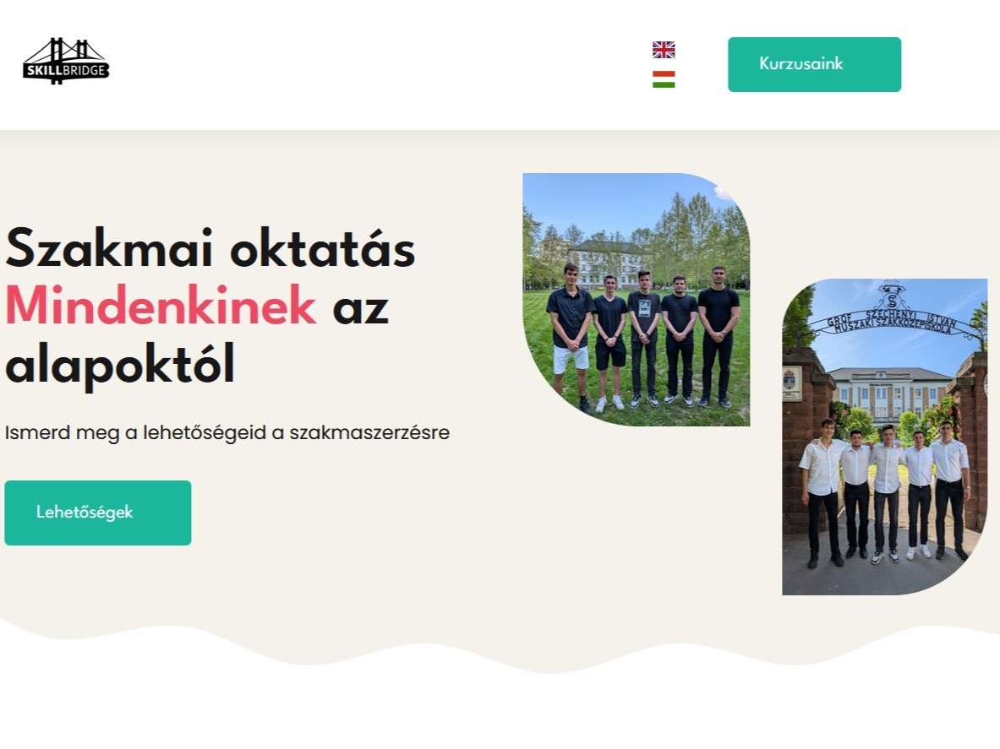
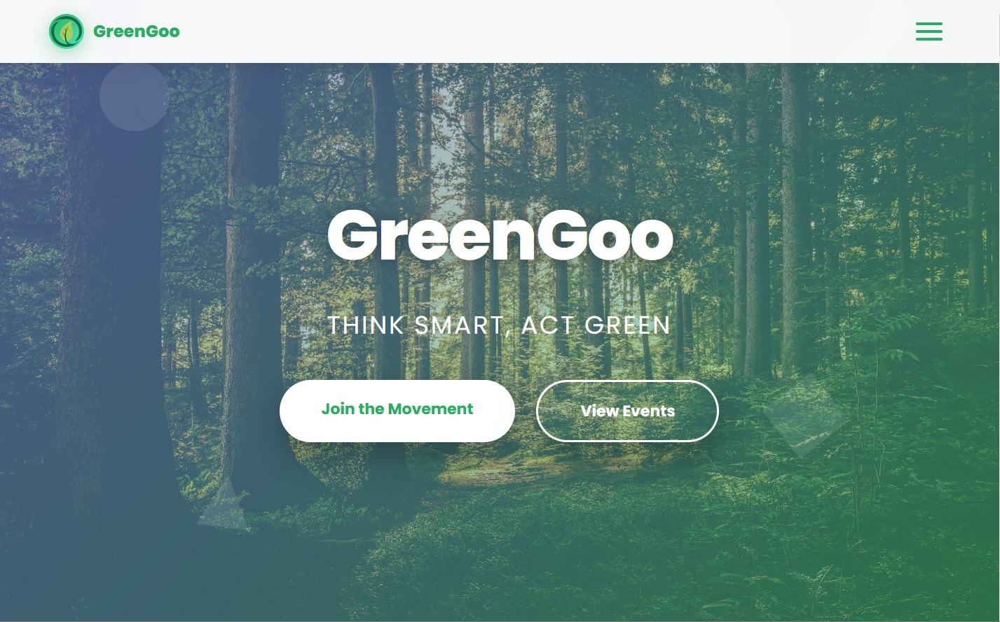

We don't just build websites. We build editable web systems.
CodeNest is a two-person digital studio building websites, admin interfaces, booking flows and custom web tools that can be operated, updated and improved over time.
A website is not enough if nobody can update it, booking happens somewhere else, forms are unclear, reviews are not requested, and no one is responsible for hosting, backups or updates.
We think about these parts together.
What we build
Concrete systems, not vague digital packages.
Every service is scoped around what needs to be editable, connected, handed over and operated after launch.
Municipal & Institutional Portals
Modern, editable portals for municipalities and institutions with news, announcements, documents, events, institutions, forms and admin access.
Public website
Directus or CMS admin
News, documents, events, institutions
Editor roles, training, hosting and backup
Business Website Systems
Business websites that explain the offer, build trust, bring enquiries and can be updated from an admin when needed.
Responsive website and CMS/admin if needed
Services, references, FAQ and quote form
SEO/AEO content structure and analytics
Optional booking, review flow and operation
Booking, Reviews & Local Presence
We help make your local online presence clearer, more complete and easier to act on.
Google Business Profile audit
Booking tool selection and integration
Review link, QR code and request templates
Local landing page and Maps integration
Custom Web Tools
Tools for workflows that are currently handled manually in spreadsheets, emails or disconnected forms.
Calculators, quizzes and application forms
Mini CRM, dashboards and internal admin
Exports, email notifications and statuses
Selected work
Projects that show the range.
A focused selection of client work, platforms and concepts. No inflated numbers, no fake case metrics.
Municipal Platform / Directus Admin
Gárdony Platform
Editable information platform for news, documents, events, institutions and contact details.

Business Website / Client Project
BossClub
A clearer business web presence shaped around offer, trust and enquiry flow.
International Service Website
Ildiko Fonad
International-facing service website with simple structure and direct enquiry paths.
B2B Consulting Website
GooGee
Consulting website structure focused on explaining services without making the page heavy.

Education Platform Concept
SkillBridge
Education platform concept exploring learning flows, content structure and user progress.

Sustainability Campaign Microsite
GreenGoo
Small campaign site built around a focused message, lightweight navigation and visual clarity.
Featured case study
Gárdony Platform: an editable municipal information system.
A modern municipal platform where residents can find news, documents, events, institutions and contact information, while the municipality can manage content through an admin interface.
Structured content instead of hard-coded pages
Prepared with WCAG principles in mind
Admin workflow for news, documents and institutions
Hosting, backup and operation can be planned from the start
Gárdony Platform
News
Documents
Events
Institutions
Directus admin
How we work
Clear scope first. Build second.
Every project starts with understanding the goal and defining what will actually be built, handed over and supported.
01
Understand
Discovery
We understand the goal, users, content, constraints and what needs to keep working later.
02
Map
System plan
We define pages, admin needs, integrations, forms, content types and deliverables.
03
Build
Design & development
We design the interface and build the public site, admin logic and connected flows.
04
Transfer
Handover & training
We test forms, explain access, record a short walkthrough if useful, and show how editing works.
05
Keep running
Managed operation
If needed, we stay responsible for hosting, updates, backups, smaller fixes and technical checkups.
Admin & technology
Editable when it needs to be editable.
If WordPress is the best fit, we'll say so. But when a project needs structured content, custom admin logic or long-term scalability, we prefer modern headless/admin-based systems.
Directus / CMS
Structured, database-backed content
Roles and permissions
Modern frontend and API-based extensibility
Hosting, backup and monitoring
Handover
What you get at handover
We do not just publish the site and disappear. Handover includes the practical things you need to use and maintain the system.
Live website or system
Admin access and editor roles if included
Short handover guide or walkthrough
Login and access overview
Form and contact testing
Basic SEO setup
Hosting and backup information
Support options and next-step recommendations
Managed operation
A web system has to keep running after launch.
A web system is not truly finished when it goes live. It needs to run, be updated, be backed up, and it helps to have someone you can contact when something breaks or needs a small change.
hosting
CMS runtime
database
backup
uptime monitoring
security updates
smaller fixes
support time
technical checkups
Scope and fit
Every project is priced by scope.
We do not want to sell a package blindly. First we look at what you actually need: a simple website, editable admin, booking flow, local presence cleanup or a custom web tool.
Content volume
Admin/CMS needs
Integrations and custom workflows
Hosting and operation needs
Is CodeNest the right fit?
We might not be the right fit if you only want the cheapest possible site, need something thrown together overnight, expect guaranteed rankings, or want unlimited changes without scope.
We are a good fit if you want a website or system that can be maintained, edited, handed over clearly and kept working after launch.
Studio
Two people. Direct work. More responsibility.
CodeNest is run by Bors and Dávid. We are not a big agency, and that is the point: you talk to the people who understand, plan and build your system.
Bors Gugi
Co-founder · AI & Web Developer · Project Lead
Dávid Fekete
Co-founder · UI/UX Designer · Frontend Developer
Lab
Interactive experiments live here.
Not every project starts as a client website. Some start as experiments where we test interaction, storytelling, AI concepts and playful web experiences.
A website mainly presents information. A web system also has editable content, forms, booking, admin logic, integrations or operation behind it.
It is worth it when news, services, documents, events, references or other content will change after launch.
Yes, if the project includes a CMS or admin. We define what should be editable during planning and show you how to use it at handover.
Depending on the project, it can include hosting, CMS runtime, database, backups, uptime monitoring, updates, smaller fixes and support time.
Usually we start with the simplest reliable option. If an existing booking tool fits, we integrate it. If the workflow is specific, we can plan a custom flow.
No. We do not promise guaranteed rankings. We can help make your local presence clearer, more complete and easier for people to act on.
You receive the handover items, access overview and support options. If you choose managed operation, we keep handling the technical background.
The domain and content should belong to you. We help keep access clear so the system is not locked away from the organization using it.
Backup needs are planned with hosting and operation. For managed systems, backup information is part of the handover and operation plan.
Yes. We can plan editable municipal or institutional portals with news, documents, events, institutions, forms, roles and managed operation.
Contact
Tell us what needs to work.
You do not need a perfect brief. A few sentences about the organization, the problem and the needed workflow are enough to start a useful conversation.